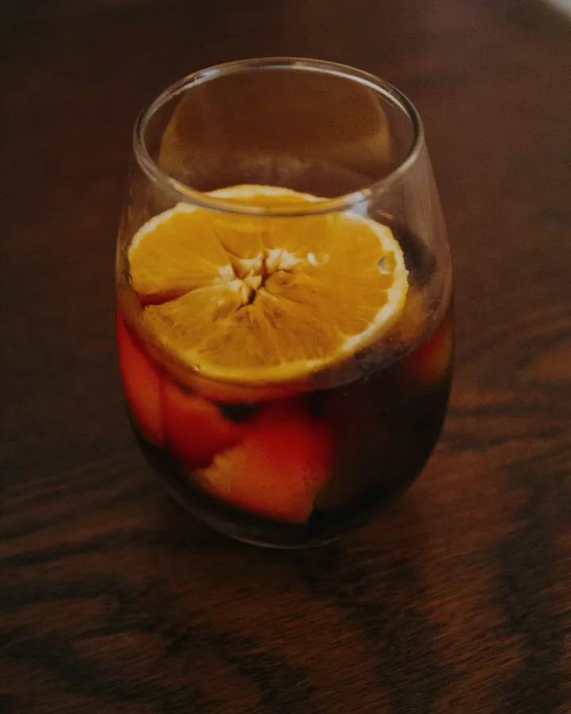
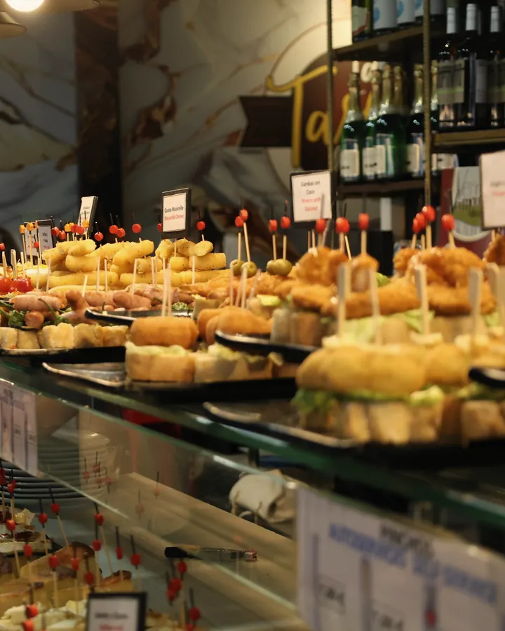
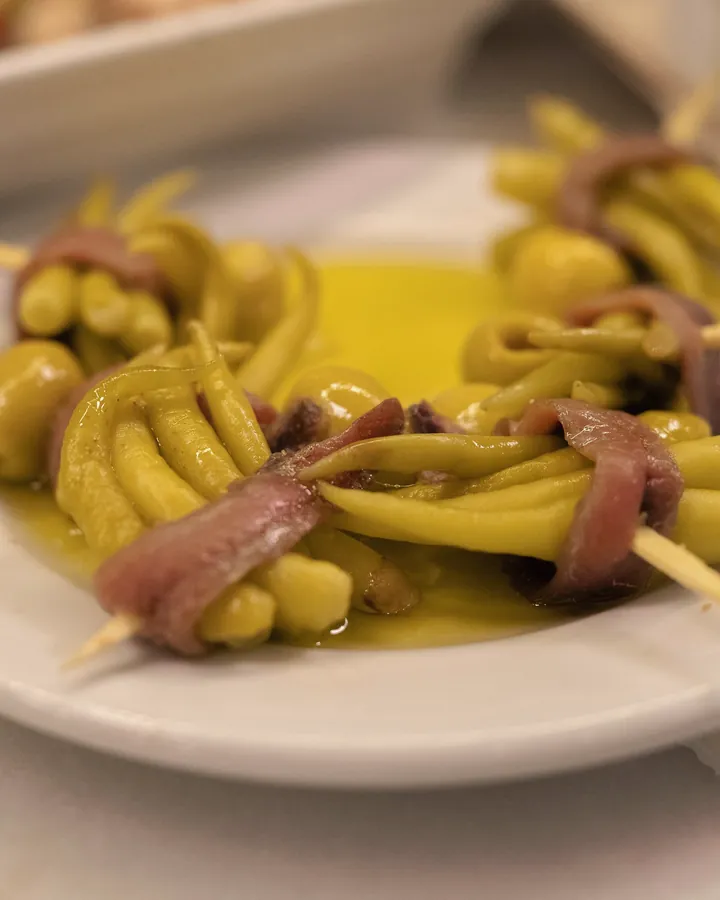
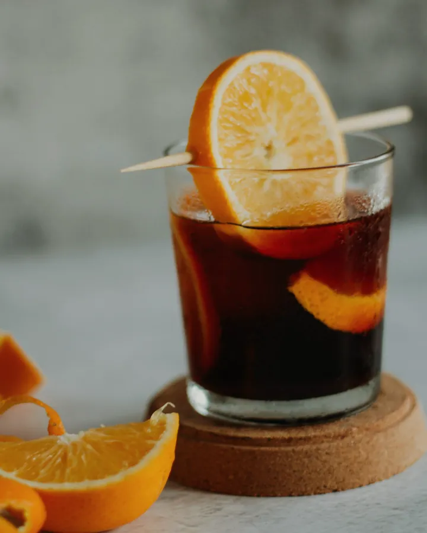
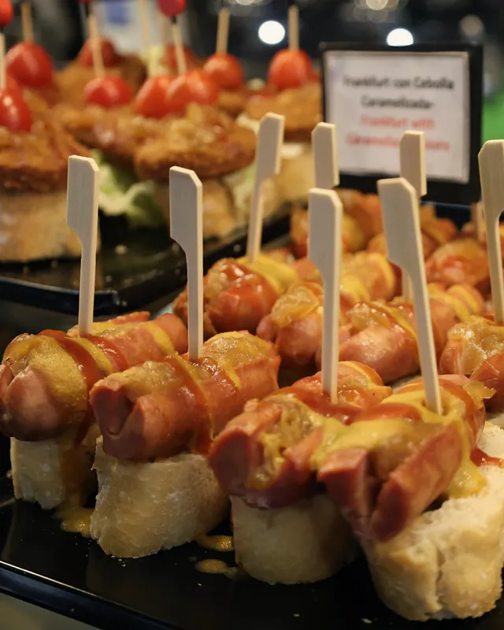
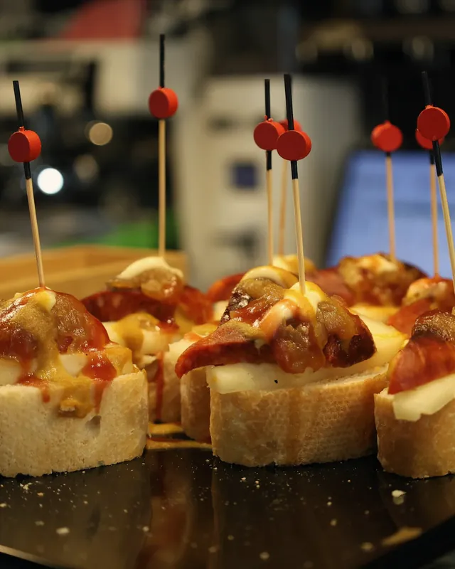
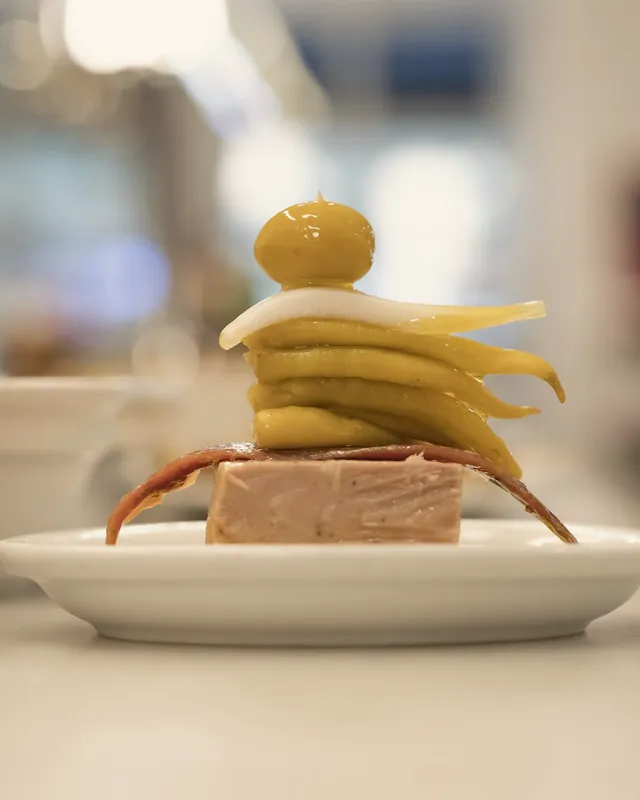
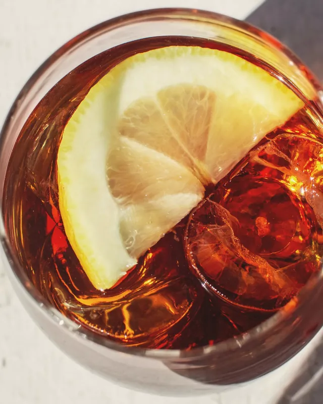
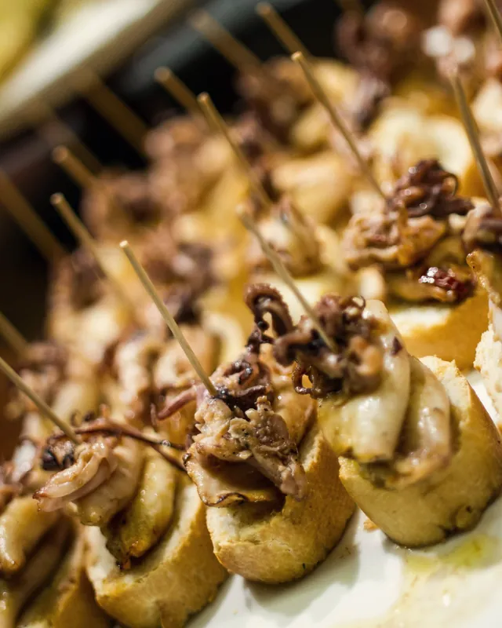

Taberna de barrio
Vermut, pintxos y sobremesa
Vermut de grifo, la barra llena a mediodía y una cazuela del día para quedarse. En la Parte Vieja, como siempre.
Calle Sagarrondo 18 · Parte ViejaMar a dom a mediodía · Mar a sáb por la noche

La casa
Una taberna de las de antes
Mahaia quiere decir «la mesa» en euskera, y eso defendemos: una barra larga, vermut de grifo y sitio para la sobremesa. A mediodía la barra se llena de pintxos; por la noche, cazuelitas y charla.
- Vermut de grifo · 3 €
- Gilda · 2,50 €
- Cazuelita del día · 9 €


La barra
Pintxos, cazuelas y vermut
Pintxos de barra
- GildaPiparra, anchoa y aceituna2,50 €
- Txistorra a la planchaEn pan, con pimiento3,00 €
- Tortilla de bacalaoJugosa, recién hecha3,50 €
- Brocheta de langostinosCon salsa verde3,80 €
- Croqueta de jamónCremosa, de las de casa2,20 €
- Bonito con piparrasSobre pan tostado3,20 €
Cazuelitas y raciones
- Callos a la donostiarra9,00 €
- Albóndigas en salsa8,50 €
- RabasCalamar rebozado10,00 €
- Pimientos de GernikaFritos, con sal gorda7,00 €
Para beber
- Vermut de grifoCon naranja y aceituna3,00 €
- Vermut con sifón3,20 €
- TxakoliDe Getaria2,80 €
- Sidra natural2,50 €
- Caña2,20 €
- Mosto2,00 €
Carta de ejemplo: en tu web, tus pintxos y tus precios, al día.
Reservas
Guarda tu mesa para la sobremesa
La barra es de quien llega, pero las mesas del fondo se reservan. Escríbenos por WhatsApp con el día, la hora y cuántos sois.
Dinos día y horaY cuántos vais a ser.
Te confirmamosEn el mismo chat, en un momento.
Te esperamosCon el vermut frío.

Galería
Lo que sale de la barra





Fotos de Unsplash
Horario
Cuándo venir
Mar a dom a mediodía · Mar a sáb por la noche
| Lunes | Cerrado |
|---|---|
| Martes | 12:00–16:00 · 19:00–23:30 |
| Miércoles | 12:00–16:00 · 19:00–23:30 |
| Jueves | 12:00–16:00 · 19:00–23:30 |
| Viernes | 12:00–16:00 · 19:00–00:30 |
| Sábado | 12:00–16:00 · 19:00–00:30 |
| Domingo | 12:00–16:00 |
Cómo llegar
En el corazón de la Parte Vieja
Calle Sagarrondo 1820003 Donostia / San Sebastián
Al cargar el mapa, tu navegador se conecta con Google.
Texto de ejemplo: en tu web, cómo llegar a pie, en autobús o en coche desde tu barrio.